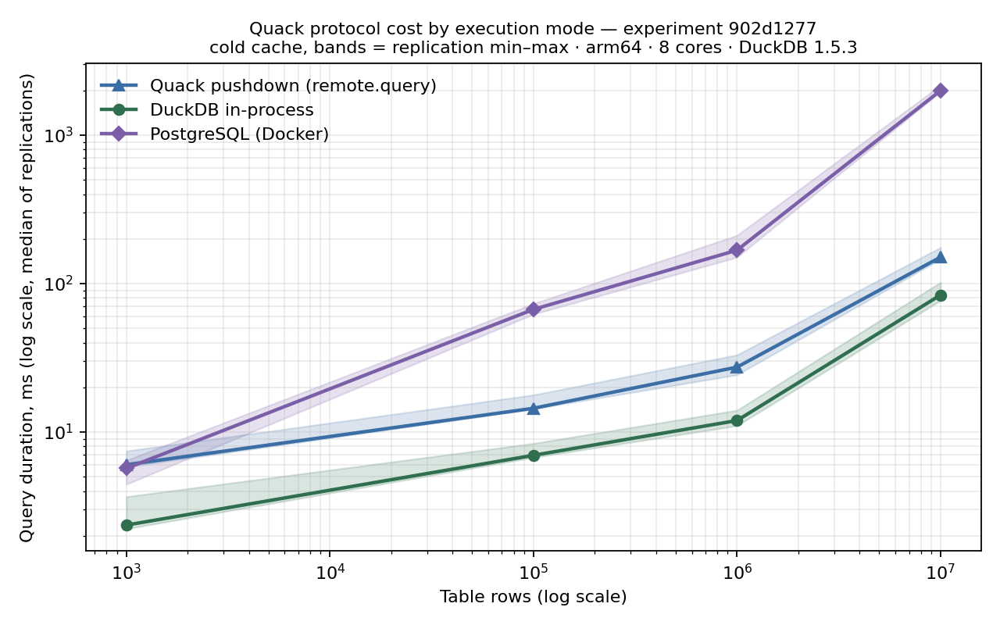
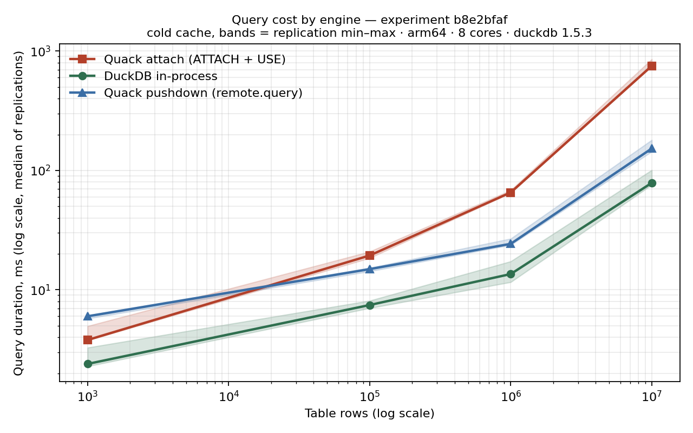

Hi, I'm Ramona, an Independent Researcher, Solutions Architect and Educator. I bring over 20 years of rigorous database engineering experience to the world of AI; my current focus is on System Integrity—applying the strict determinism of data engineering to the probabilistic nature of AI Agents. More to the point, I build instruments that measure whether database and AI agents do, and then publish the experiment alongside the result. In that way, you can reproduce it or show me where I'm wrong.
Every experiment is a capsule addressed by an 8-character SHA-256 fingerprint over its config, SQL, and every line of measurement-relevant Python. Change the method and the ID changes. Cold-cache execution, hard row-count assertions, and an integrity seal on every capsule. The four published Quack capsules additionally carry OpenTimestamps proofs anchored to Bitcoin.

902d1277 — DuckDB-over-Quack (pushdown) against PostgreSQL:
4.4× at 100K rows, 6.1× at 1M, 13.2× at 10M. Bands are replication min–max,
cold cache, arm64, 8 cores, DuckDB 1.5.3. Caveat disclosed in the config: PostgreSQL pays a
macOS Docker-VM tax on this bench.
b8e2bfaf — attach-mode overhead grows with scan size
(2.6× at 100K → 9.5× at 10M); pushdown stays flat at ~2×. Attach mode streams
table data client-side; pushdown ships only results. The residual 2× traced to reduced
server-side parallelism, not transport (capsule 25b0e134).uvx sqlbenchdag.Per-turn tracing and deterministic grading of coding agents working against a commercial
lakehouse platform. The traces surfaced three defects I reported upstream — including
an error message that actively sends an agent in the wrong direction, suggesting
tanh for a date function.
I built a labelled evaluation set for a retrieval system I had written myself, and found it answering fluently, with citations, and with no error of any kind. Recalibrated the refusal threshold from 0.56 to 0.87 precision and validated out-of-sample. Confident output is not evidence; the failure mode to fear is the plausible one, not the obvious one.
Runs entirely from a local directory — LanceDB for vector, full-text and hybrid search, sentence-transformers for embeddings, no hosted cluster and no API key. Ask a question, get an answer and a link to the timestamp where it's answered.
A deterministic exploit against an open-source agent memory system: text that reads as ordinary content to a human, but that the extraction pipeline turns into a stored fact the agent later treats as its own knowledge. Disclosed responsibly. Separately, a forensic read of a coding agent's local state directory — what it writes to disk, in plaintext, without telling you.
16 content-addressed studies, 7 models, 110+ graded runs. When a high-status persona is injected into an agentic routing decision, the pipeline follows the persona rather than the engineering argument. The companion finding is prompt-level instructions get ignored under pressure while mechanical controls hold.
ai-agent-utils — boilerplate and security guidelines for working safely with autonomous coding agents: what to check before you let one run, and what it leaves behind. The Pedantic Medallion — community-curated playbooks for building shared understanding, from the framework of the same name.
1,400+ students across 21 course offerings — databases, database system technology, software engineering, programming on the web. Led the department's migration from IBM DB2 to PostgreSQL: platform evaluation, rewriting every course material, retraining instructors, carrying students through a change none of them chose. Introduced XQuery into the curriculum from my own M.Sc. research, with assignments on real public datasets. Nominated for the U of T Scarborough Teaching Award, 2007.